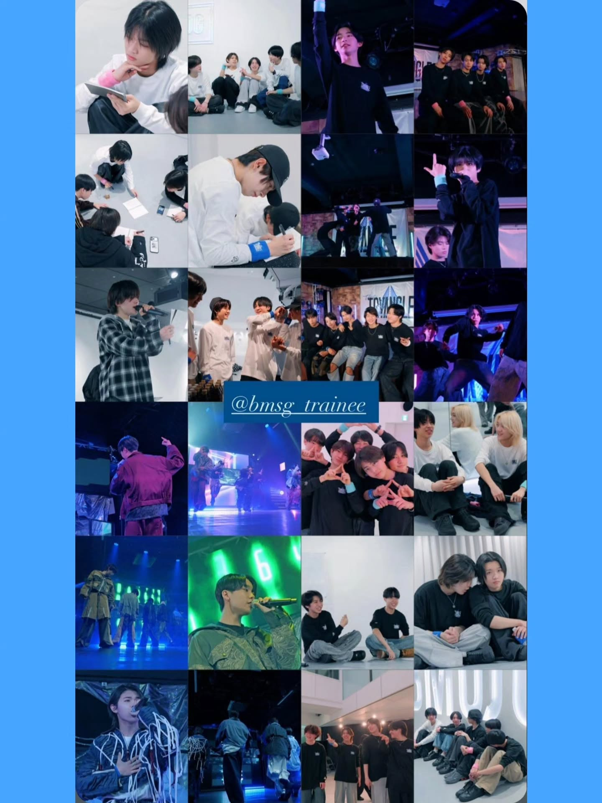

PHOTO
中京テレビ 「BMSG TRAINEE Project the TRYANGLE」

.
【Still work】
中京テレビ
「BMSG TRAINEE Project the TRYANGLE」
シーズン1.2通してスチール担当として携わらせていただきました
公式SNSでTRAINEEの皆の奮闘の様子が沢山アップされているので、ぜひご覧ください！
（紹介しきれないので、一部を公式SNSより引用させていただいております）
PHOTO
